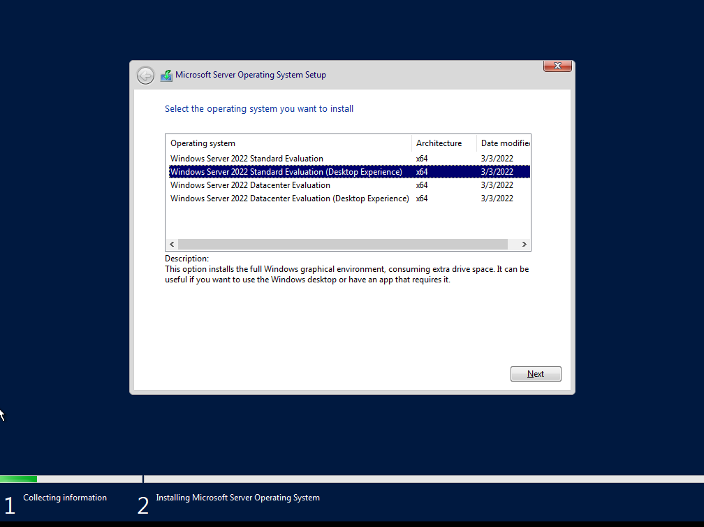
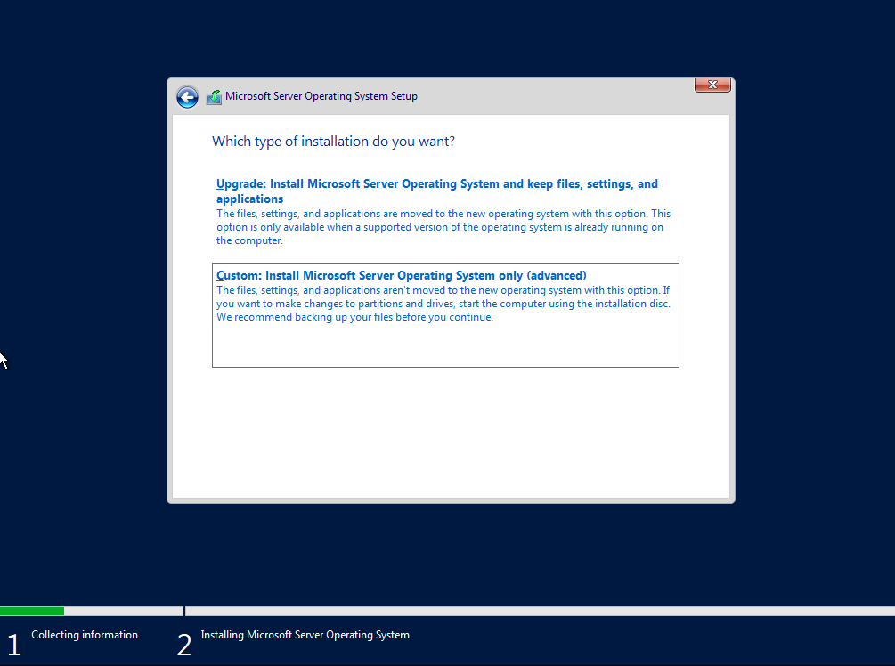
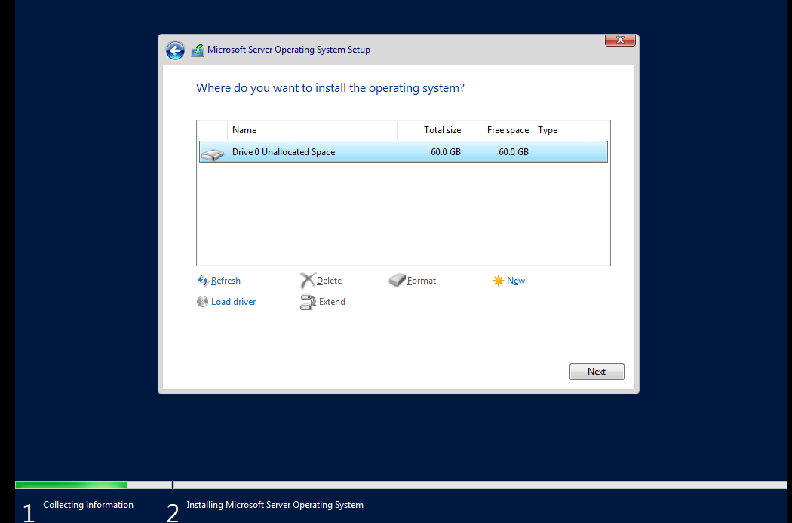
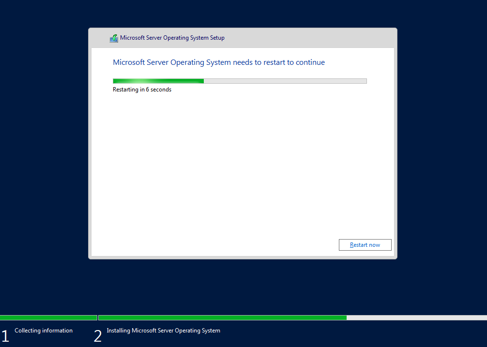
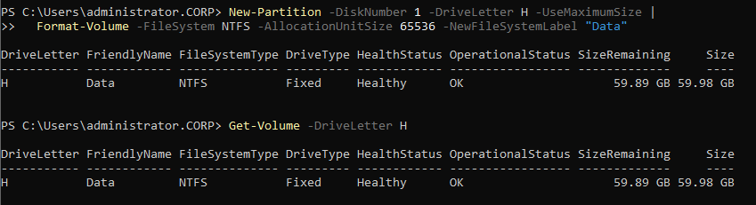
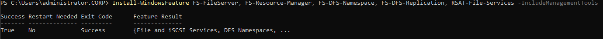
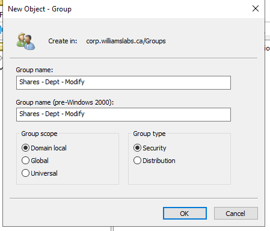
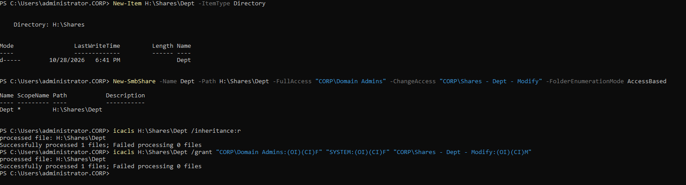
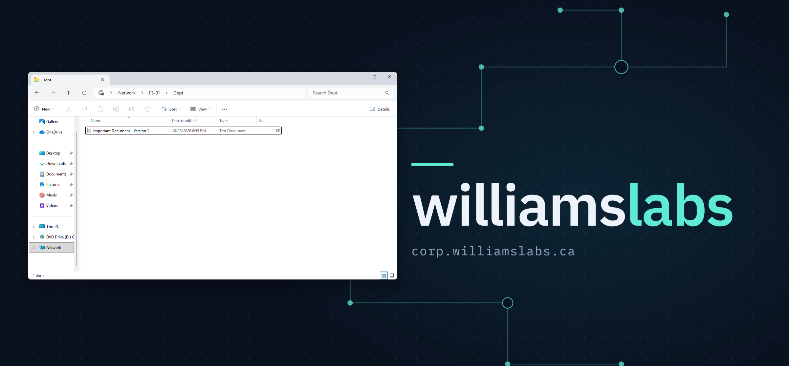

A domain-joined file server on the server VLAN, with a dedicated data disk and SMB shares whose access is controlled by Active Directory security groups.
FS-01 is built in VMware Workstation and sits on the server VLAN (10.10.20.0/24) next to the domain controller, AD-01. Data lives on its own disk, and a department share is controlled by an AD security group. A second, read-only share holds the desktop wallpaper used by the user GPO.
| Item | Value |
|---|---|
| Hostname | FS-01 |
| OS | Windows Server 2022 Standard Evaluation (Desktop Experience) |
| Hypervisor | VMware Workstation |
| IP address | 10.10.20.51/24, gateway 10.10.20.1 |
| DNS | 10.10.20.50 (AD-01) |
| Domain | corp.williamslabs.ca |
| OS disk | 60 GB |
| Data disk | 60 GB, volume H: (label Data) |
Setup first failed with "Windows cannot find the Microsoft Software License Terms". In VMware Workstation the usual cause is Easy Install, which passes an unattended answer file through a virtual floppy. The fix was to create the VM with "I will install the operating system later", attach the ISO to the virtual DVD drive and remove the floppy device. The network adapter uses the VMnet that maps to the server VLAN, the same one as AD-01.
Selected Windows Server 2022 Standard Evaluation (Desktop Experience):

Chose Custom: Install Microsoft Server operating system only. Upgrade is not available on a fresh VM.

Installed onto the 60 GB unallocated disk (Drive 0). Setup creates the partitions itself.

Setup then copies files and restarts several times. Don't press a key at the "Press any key to boot from CD or DVD" prompt on the reboots, or setup starts over.

After the final reboot I set the local Administrator password and signed in (Ctrl+Alt+Insert in the VMware console).
Static IP in the server range, with DNS pointed at the domain controller:
New-NetIPAddress -InterfaceAlias "Ethernet0" -IPAddress 10.10.20.51 -PrefixLength 24 -DefaultGateway 10.10.20.1 Set-DnsClientServerAddress -InterfaceAlias "Ethernet0" -ServerAddresses 10.10.20.50
Tentative and Invalid address states right after the command are normal (duplicate address detection and the persistent copy of the setting). Get-NetIPAddress then showed Preferred, Get-DnsClientServerAddress showed 10.10.20.50, and the gateway answered pings.
Before joining, I checked that the domain resolved:
nslookup corp.williamslabs.ca
It returned 10.10.20.50. The DNS request timed out / Server: UnKnown lines above the answer come from nslookup trying a reverse lookup of the DNS server, and AD-01 has no reverse lookup zone for 10.10.20.0/24 yet. It does not affect the join.
Rename and join in one step:
Add-Computer -DomainName corp.williamslabs.ca -NewName FS-01 -Credential CORP\Administrator -Restart
Verification after signing in as CORP\Administrator:
whoami # corp\administrator (Get-CimInstance Win32_ComputerSystem) | Select Name, Domain, PartOfDomain Test-ComputerSecureChannel -Verbose nltest /dsgetdc:corp.williamslabs.ca
A second 60 GB virtual disk (thin provisioned, stored in the VM's own folder so backups and moves take it along) appeared in Windows as Disk 1, Offline and RAW.
D: was already taken by the virtual DVD drive, so New-Partition -DriveLetter D failed with "The requested access path is already in use." I used H: instead:
Set-Disk -Number 1 -IsOffline $false Set-Disk -Number 1 -IsReadOnly $false Initialize-Disk -Number 1 -PartitionStyle GPT New-Partition -DiskNumber 1 -DriveLetter H -UseMaximumSize | Format-Volume -FileSystem NTFS -AllocationUnitSize 65536 -NewFileSystemLabel "Data"
A 64 KB allocation unit suits a volume of larger files. Get-Volume -DriveLetter H shows the result: NTFS, Healthy, about 60 GB.

Install-WindowsFeature FS-FileServer, FS-Resource-Manager, FS-DFS-Namespace, FS-DFS-Replication, RSAT-File-Services -IncludeManagementTools
The install completed with Success: True and no restart needed.

Groups are named the same way as GPOs: broad to specific, so they sort and read naturally. A group name is what it is > which resource > access level, for example Shares - Dept - Modify. For more on naming conventions, see this r/activedirectory thread on GPO naming standards.
Created in Active Directory Users and Computers in the Groups OU: scope Domain local, type Security, with tuser1 as a member.

PowerShell equivalent:
New-ADGroup -Name "Shares - Dept - Modify" -SamAccountName "Shares - Dept - Modify" -GroupScope DomainLocal -GroupCategory Security -Path "OU=Groups,DC=corp,DC=williamslabs,DC=ca" Add-ADGroupMember -Identity "Shares - Dept - Modify" -Members tuser1
New-Item H:\Shares\Dept -ItemType Directory New-SmbShare -Name Dept -Path H:\Shares\Dept ` -FullAccess "CORP\Domain Admins" ` -ChangeAccess "CORP\Shares - Dept - Modify" ` -FolderEnumerationMode AccessBased icacls H:\Shares\Dept /inheritance:r icacls H:\Shares\Dept /grant "CORP\Domain Admins:(OI)(CI)F" "SYSTEM:(OI)(CI)F" "CORP\Shares - Dept - Modify:(OI)(CI)M"

Dept but points at H:\Shares\Dept. Clients only see \\FS-01\Dept, so the server's disk layout stays hidden and the folder can move later without changing any GPO or drive mapping.On the Windows 11 client, tuser1 signed out and back in (so the new group membership is in the logon token), opened \\FS-01\Dept and created a text file. The share appears under Network > FS-01 > Dept:

The file appeared in H:\Shares\Dept on FS-01, confirming that the share, the group and both permission layers work end to end.
The desktop wallpaper GPO originally pointed at a share on AD-01. A dedicated read-only share on FS-01 now serves the image from the file server instead:
New-Item H:\Shares\Wallpaper -ItemType Directory New-SmbShare -Name Wallpaper -Path H:\Shares\Wallpaper ` -FullAccess "CORP\Domain Admins" ` -ReadAccess "CORP\Domain Users" ` -FolderEnumerationMode AccessBased icacls H:\Shares\Wallpaper /inheritance:r icacls H:\Shares\Wallpaper /grant "CORP\Domain Admins:(OI)(CI)F" "SYSTEM:(OI)(CI)F" "CORP\Domain Users:(OI)(CI)RX"
Get-SmbShare lists both Dept and Wallpaper. The GPO wallpaper path becomes:
\\FS-01\Wallpaper\WilliamsLabs Background.png
A UNC path uses the share name, not the local drive path, so H:\Shares never appears in it.
Shares - Dept - Modify should be denied or should not see Dept.User - Desktop Wallpaper to match the naming convention (for example Users - Operating System - Desktop Wallpaper).Dept appears as a drive letter.H:, plus an optional FSRM quota on Dept.